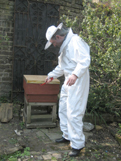

follow us on


follow us on |
Who we areUrban Bees helps bees in towns and cities by working with communities, charities and corporates to educate people about the importance of bees and improving forage and habitat in urban areas. Brian McCallumBrian runs Urban Bees. He is a qualified teacher and worked for nine years as a part-time seasonal bee inspector for the government. He is a member of the Bee Farmer’s Association and the co-author of four books on bees, Keeping Bees and Making Honey, A World without Bees, Bees in the City, and The Good Bee: A Celebration of Bees and How to Save Them. Brian provides 'meet the bees' sessions for a number of corporate clients and other organisations. He created the 'hive talking' bee map to match existing and aspiring beekeepers and people who want to host hives. He educates children, young people and adults about bees, writes blogs. Alison Benjamin Alison co-founded Urban Bees. She is a journalist, author, educator and bee-friendly plant expert. She co-authored Keeping Bees and Making Honey, A World without Bees, Bees in the City, an urban beekeepers’ handbook; and The Good Bee: A Celebration of Bees and How to Save Them. She was part of the team that designed the award-winning King’s Cross Bee Trail App. And she created a solitary bee garden at the 2018 RHS Chelsea Flower Show with River of Flowers which won a silver medal. After a 20 year career at The Guardian, Alison is now pursuing her passion for wild bees, by doing bee makeovers, creating and maintaining bee-friendly planters, writing newsletters, giving talks and developing partnerships to improve forage and habitat for bees and pollinators in towns and cities. Instagram alison_urbanbees Brian and Alison live in Hackney, east London. |
follow us on |
||